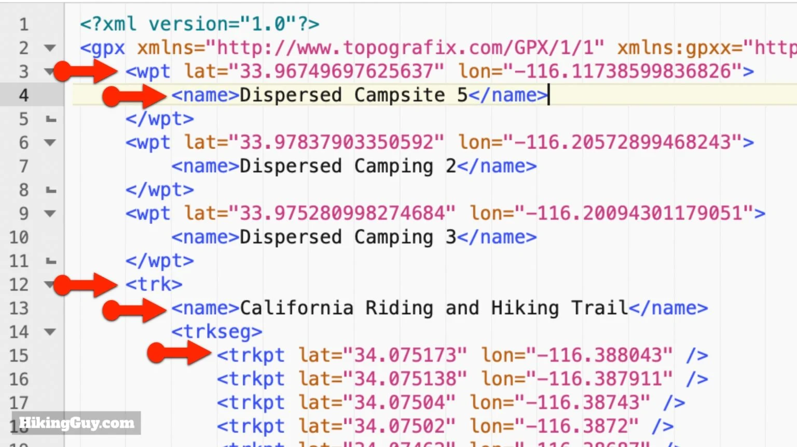

📚 Rédaction du CDC technique:
Ce projet est une mise en situation professionnelle. Nous avons imaginé travailler pour une entreprise qui a décidé d’offrir à ses employés une application de forme et de bien-être. Nous sommes les développeurs de l’application et nous devons répondre à leur demande. L’entreprise pour laquelle nous allons travailler est une entreprise de la région nommée Moustache Bikes, située à Capavenir Vosges.
 Choix de la solution
Choix de la solution
Nous avons choisi Angular pour mener a bien ce projet. Angular est un framework opensource basé en Typescript qui permet la création d'application web. Ce framework est basé sur une architecture Modèle Vue Controlleur, il est très fluide et permet une forte maintenabilité et une amélioration du travail collaboratif. Son système de routes et de formulaires est également très pratique. Notre projet utilisera donc typescript, html et scss grâce a ce framework.
🖥 Interface l'application
Rajouter screen + explication une fois visuel projet fini Rajouter leaflet💾 Base de données
Les données nécessaires au fonctionnement de l'application seront stockées dans la base de données MySql suivante.
Les données d'utilisateurs sont stockées dans la table user, lors de l'inscription, les informations suivantes seront demandés :
- Prénom
- Nom
- Adresse mail professionnelle lié a l'entreprise (La table mail_list contiendra la liste de tout les mails de l'entreprise et permettra de vérifier si l'utilisateur qui s'inscrit travaille bien pour notre client)
- Mot de passe (voir la partie connexion & sécurité)
Un parcours (route) est forcément lié a un utilisateur grâce a la clé étrangère user_id qui est NOT NULL, cependant vu qu'un utilisateur a la possibilité d'ajouter ses propres entrainements et qu'il y aura des entrainements (training) déjà présent dans l'application, le champ est passé en NULL. Il s'agit d'une cardinalité OnetoMany pour toutes les clés étrangères de la base de données.
Il y aura également la possibilité de rajouter des triggers afin d'éviter certaines erreurs, comme par exemple pour la vérification des emails ou pour éviter un parcours avec qu'une seule étape.
Les données respectives des parcours et entrainements sont stockées dans leurs tables _data, étape par étape. Les étapes sont obtenues en parcourant un fichier GPX que l'utilisateur fournira lui même. (voir exemple en dessous) Ainsi, chaque étape comporte sa latitude et sa longitude ainsi que le nom de l'étape si il y en a un (NULL).
Nous récupérons les infos fournies par le fichier gpx de l'utilisateur grâce a la library GPXParser, puisqu'elle supporte le Typescript depuis sa dernière release, qui date de Juin dernier. Cette library comporte une documentation satisfaisante et un nombre d'utilisateurs satisfaisant, puisqu'il y a des exemples avec les repertoires github des gens qui l'utilise pour leurs projets.